모두가 유튜버가 될 수 있고 유튜버가 되고있는 '대유튜브시대'
2020년 구독자 랭킹을 기준으로 과연 국내 유튜버들의 수입은 얼마나 될까?
- 1위 : Boram Tube Vlog [보람튜브 브이로그] (구독자수 : 2500만명) 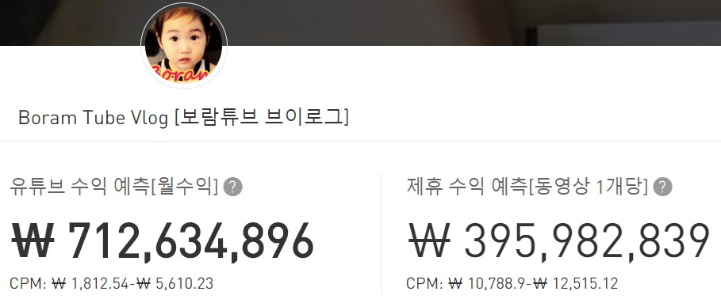
- 2위 : 1MILLOIN Dance Studio(구독자수 : 2090만명) 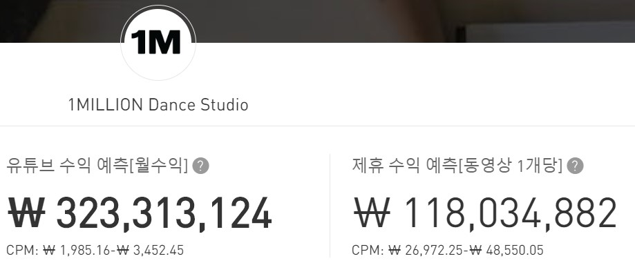
- 3위 : JFlaMusic (구독자수 : 1560만명) 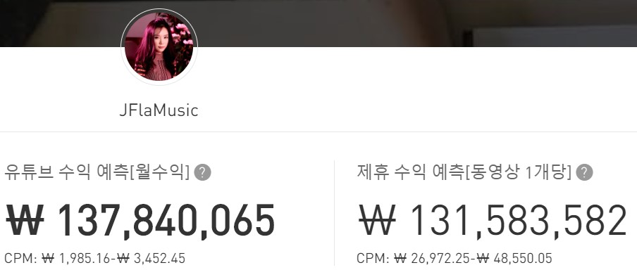
- 4위 : Boran Tube ToysReview [보람튜브 토이리뷰] (구독자수 : 1380만명)
- 5위 : TwinRoozi 쌍둥이 루지 (구독자수 : 852만명) 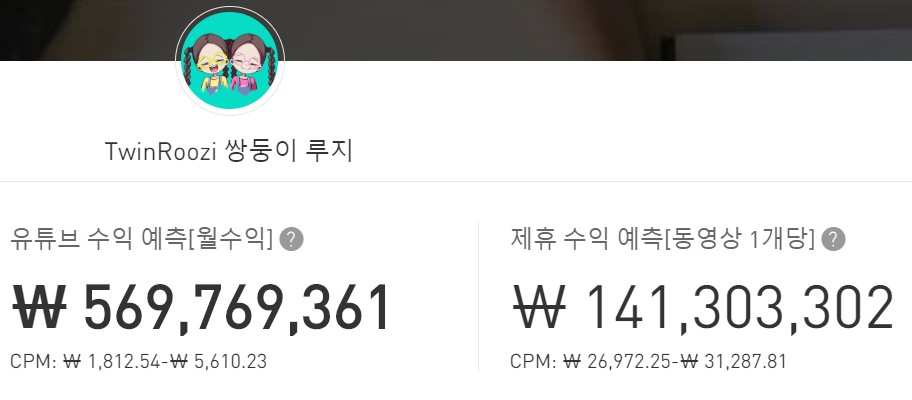
- 6위 : Jane ASMR 제인 (구독자수 : 812만명) 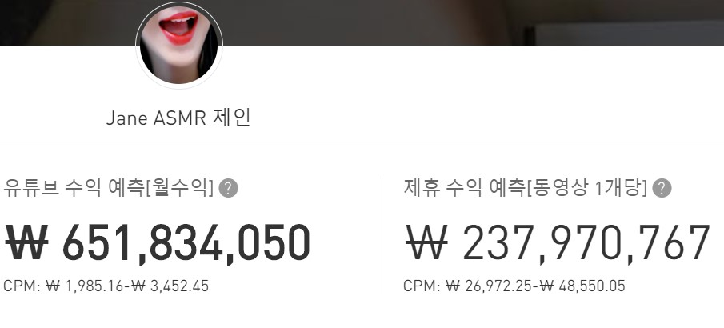
- 7위 : Sungha Jun (구독자수 : 631만명) 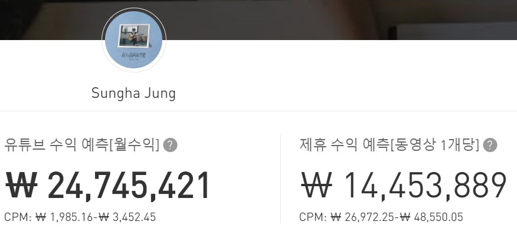
- 8위 : MariAndKids (구독자수 : 616만명) 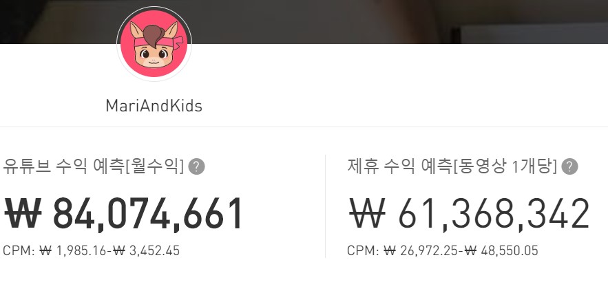
- 9위 : With kids[위드키즈] (구독자수 : 600만명) 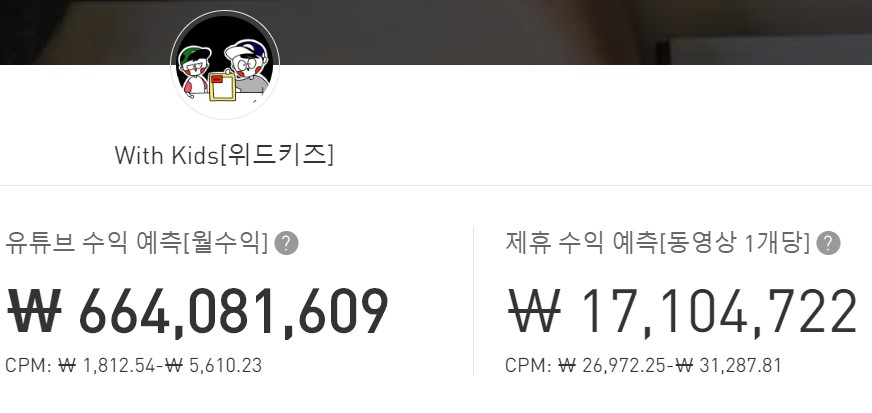
- 10위 : PONY Syndrome (구독자수 : 569만명) 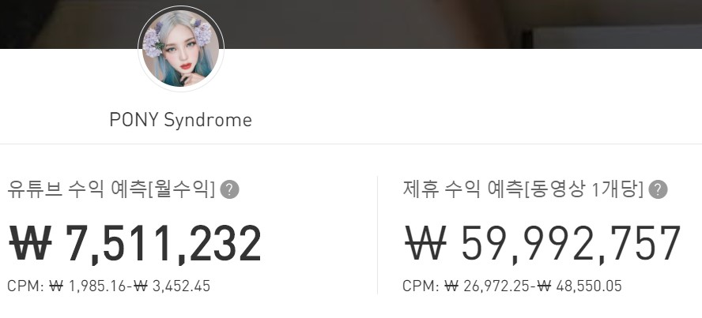
- 11위 : 서은이야기[SeoeunStory] (구독자수 : 550만명) 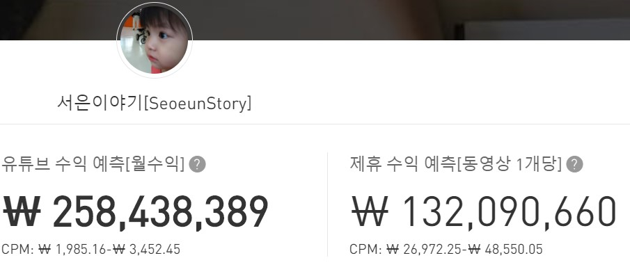
- 12위 : [Awesome Haeun] 어썸하은 (구독자수 : 452만명)
- 13위 : Hongyu ASMR 홍유 (구독자수 : 427만명) 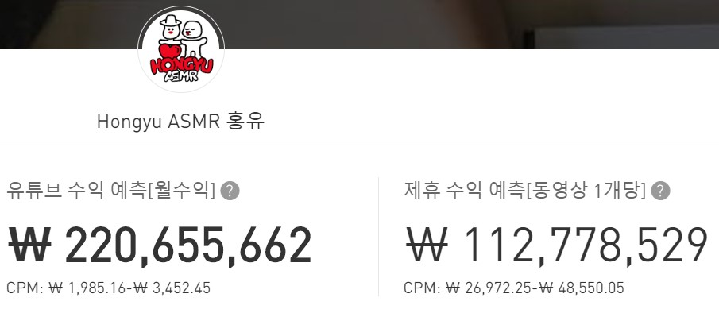
- 14위 : 백종원의 요리비책 Paik's Cuisine (구독자수 : 403만명) 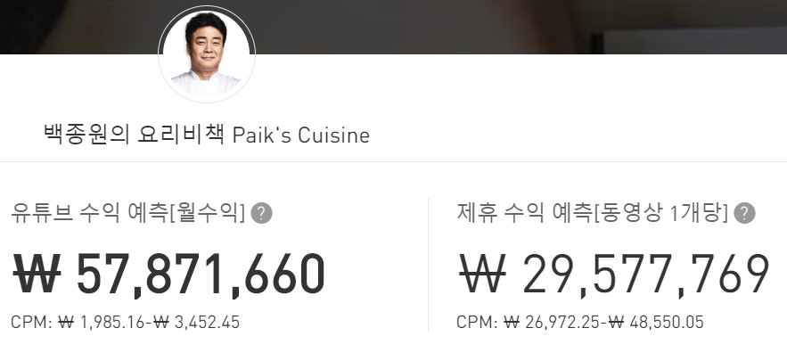
- 15위 : 보겸 BK (구독자수 : 401만명) 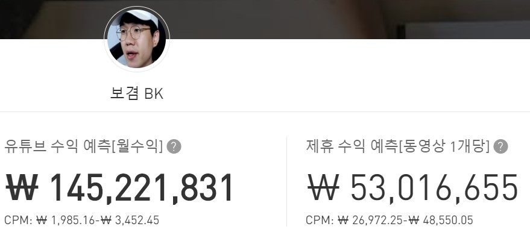
- 16위 : 떵개떵 (구독자수 : 399만명) 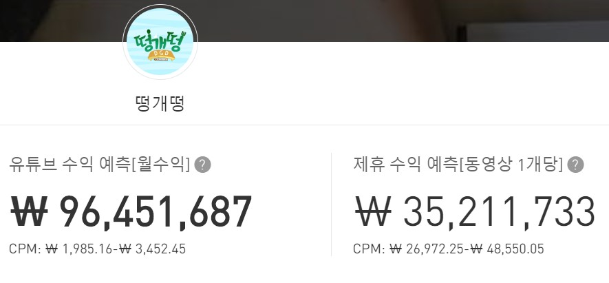
- 17위 : [Dorothy] 도로시 (구독자수 394만명) 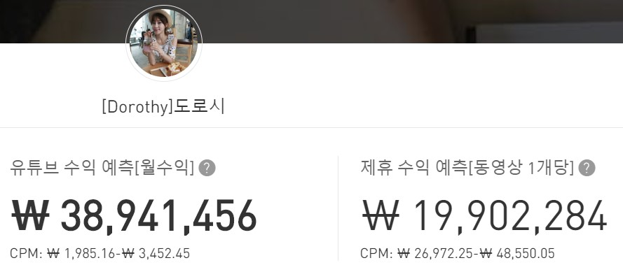
- 18위 : 문복희 Eat with Boki (구독자수 : 392만명) 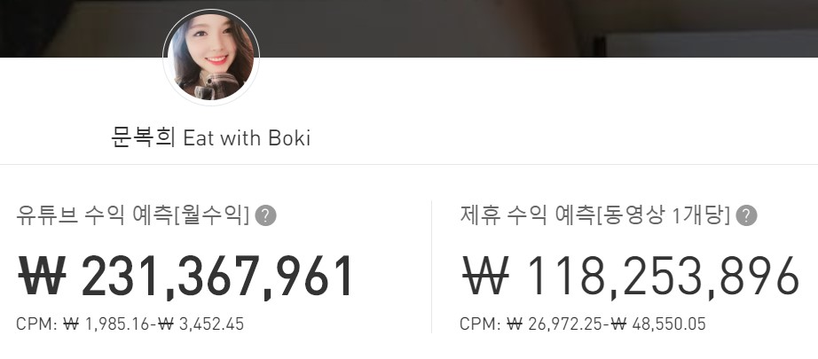
- 19위 : 영국남자 Korea Englishman (구독자수 : 389만명) 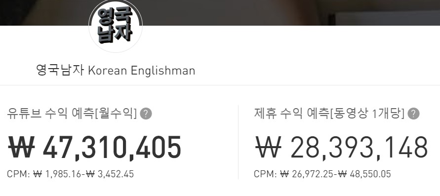
- 20위 : 쏘영 Ssoyoung (구독자수 : 377만명) 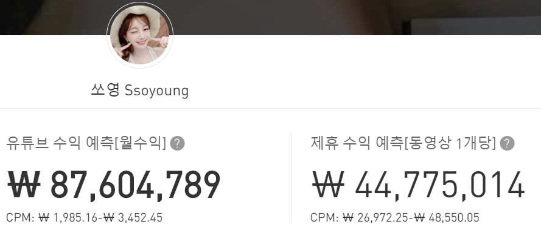